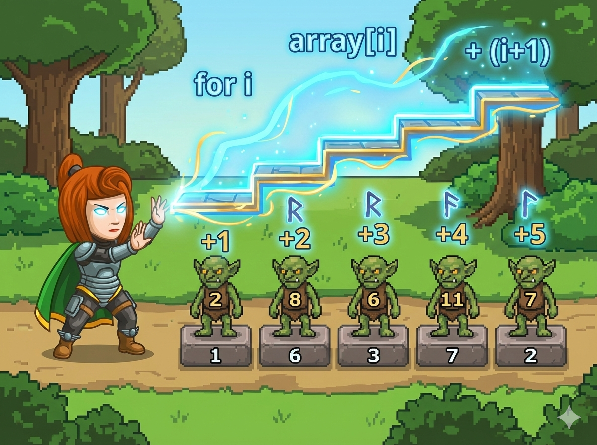

在平原森林的训练营，一排“数字小兵”正在接受魔法增幅。
魔法非常整齐，每个小兵增加的数值跟他的位置有关：
👉 任务： 输入 n 个小兵原来的数字，计算并输出变身后的新数字！
这道题的关键在于：计算机的编号 (Index) 和 人类的计数 (Count) 不一样！
我们遍历数组时，i 通常从 0 开始。
所以在循环里，第 i 个元素需要加上的值是 i + 1。
写法：a[i] += (i + 1);
使用 range(n) 会生成 0 到 n-1 的序列。
这正好对应列表的下标。
所以在循环里，a[i] 应该加上 i + 1。
遍历数组，原地修改数值。
#include <iostream> using namespace std; int main() { int n; cin >> n; int a[105]; // 定义数组 // 1. 读入数据 for (int i = 0; i < n; i++) { cin >> a[i]; } // 2. 施放魔法 (修改数组) for (int i = 0; i < n; i++) { // 下标是 i，实际位置是 i+1，所以加 i+1 a[i] += (i + 1); } // 3. 输出结果 for (int i = 0; i < n; i++) { if (i != 0) cout << " "; cout << a[i]; } return 0; }
直接利用下标进行计算。
# 1. 读入 n n = int(input()) # 2. 读入列表 a = list(map(int, input().split())) # 3. 施放魔法 # i 从 0 到 n-1，代表下标 for i in range(n): # 第 i 个元素加上 (i+1) a[i] += i + 1 # 4. 输出 (用 *号解包) print(*a)